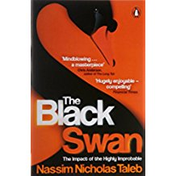

From zero to your first billion requests
Daniel Giribet - Director of Engineering at Schibsted
 @danielgiri
@danielgiri
About me

The mission
Infrastructure and engineering productivity to deliver billions (of requests)
So our product and development teams build fantastic stuff on top
The challenge
Build a team of teams from zero to 100+ engineers
The most important takeaway
Builing the teams
Growing the teams
The most important takeaway
Build up on the fundamentals
So we keep asking questions about computing fundamentals?
What’s the O() cost of whatever?
What’s the quickest way to count all 1’s in a bit array?
<Insert your fav question here>
What about other fundamentals?
What’s the relationship between reason and emotion?
Why do most ecosystems have thriving opportunistic agents?
How do self-replicating ideas propagate?
Are unpredictable rewards more effective?
Do trust people who ask us for help?
Reading up on fundamentals

Lessons learnt
#1 Be prepared to interview
A lot
Did I say a lot???
Yes, a lot
If you are above 10% conversion rate you’re not doing your job
101
#2 New teams need top-down tasks
Forming a new team is hard work
Avoid the mistake of setting a blue sky project
Resist the temptation of letting the team “find its own domain”
Set a specific short project instead, with clear deliverables
User focus
Help center
Scalable knowledge
Agile teamwork
Agility
+
Teamwork
Inside and outside teams
Daily unstructured standup for managers
Specially if managers are remote